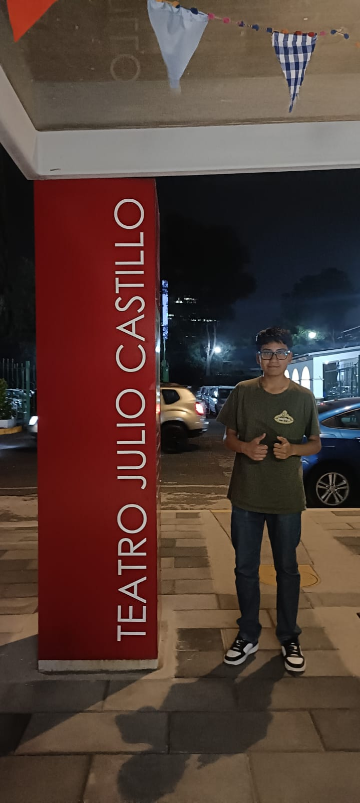

Yo, como soy
Me llamo Rodrigo, por lo general soy callado, reservado, casi no hablo porque
no tengo temas de conversación, o primero prefiero ver que le gusta a las personas
para ver sus intereses y hablar sobre ello
y ver si son buenas personas, cuando
entro en confianza ya empiezo a echar relajo, empiezo a hablar mas, hago bromas,
aunque
deberia dejar de llevarme pesado porque a veces me desato y eso hace que
baje mi rendimiento, soy una buena persona, a veces digo muchas groserias, pero mis
padres siempre me han enseñado a que siempre tengo que ayudar a los que pueda, ademas
de otros valores.

Posdata:Puse esa foto porque fue la que tenia a la mano